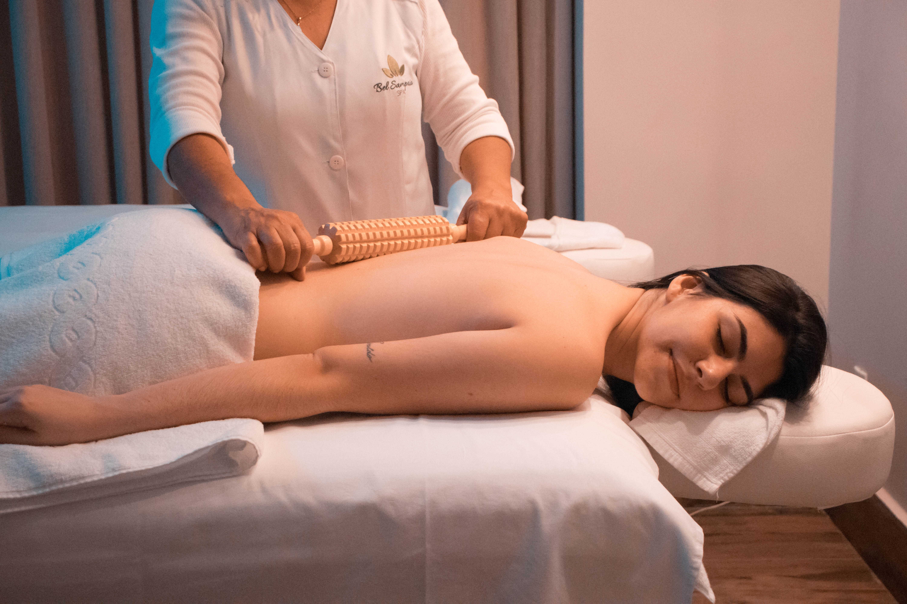

HOTEL FACILITIES
Facilities
Luxuries For Your Beachfront Home
To complement your luxury accommodation at Sea Side Park, our home of Sri Lankan hospitality features a variety of
modern
amenities to ensure your stay with us is both comfortable and memorable.
24-hour room service is available for every one of the Deluxe Rooms and Suites at Sea Side Park Hotel , along with the added pleasures
of daily housekeeping and laundry services for complete luxury on our northwestern coastline. To help you stay connected, free
Wi-Fi is available throughout the premises while dedicated I.D.D., fax, and e-mail facilities can be provided at your desire. Postal
facilities are also available, should you wish to opt for a more traditional form of communication in the form of a letter or even a
parcel.
Our friendly associates at Sea Side Park are obliged to go above and beyond to accommodate your requests. With a left luggage
facility, we will also look after your bags should you wish to venture beyond the premises for an extended period of time.
Alternatively, you may also indulge in some retail therapy with a gem and jewellery store by Careem’s within the premises.
For a holistic wellness experience, our home of Sri Lankan hospitality not only has the luxury of hosting two swimming pools, but
also a fully equipped gym, open-air tennis court, and blissful spa for experiences that let you wind down or work out. Finally,
beyond our facilities for leisure, Sea Side Park features a modern conference hall with advanced facilities that can accommodate
up to 100 people for your next meeting or event.
FEATURES AND AMENITIES
- 24-Hour Room Service
- Free Wi-Fi
- I.D.D., Fax and E-mail
- Doctor On Call
- Car Rental and Parking Facilities
- Laundry/Dry Cleaning
- Careems Gem and Jewellery Shop
- Daily Housekeeping
- Custom-made toiletries created by Link Natural
- Postal Facilities
- Left Luggage Facility
- Wine Cellar
- Daily Newspaper (On Request)
- Conference Hall
- Two Swimming Pools
- Tennis Court
- Gym
- Spa
Ocean-view spa and infinity pool in Sea Side Park
Let yourself completely unwind when you stay at Sea Side Park Hotel . Our ocean-view wellness centre is a
haven for relaxation and rejuvenation, with a dedicated spa operated by the island's famous Spa Ceylon.
A fully equipped fitness centre, pampering nail spa and beauty salon complement our
wellness facilities. Be sure to check out our infinity lap pool and Jacuzzi on the 24th floor.
Spa Ceylon

Our treatments at Spa Ceylon range from full body pampering to signature royal Kandyan massages.
Let the scent of lemongrass and the sight of ocean views lead you towards tranquil relaxation. Lavender,
ylang-ylang and patchouli will promote that deep restful sleep you crave after an exhausting day.
- Stunning ocean views
- Situated 100 metres above the ground
- Traditional and international spa treatments
- Steam room and Jacuzzinbsp;
- Five treatment rooms
Nail spa and salon
Walk into the calming space of our nail spa, where you can unwind in comfort and pamper yourself with a perfect manicure.
There are a wide range of beauty treatments available alongside lovely views of the ocean.
- Stunning ocean views
- Situated 100 metres above the ground
Fitness Centre
Located on the 23rd floor, our fitness centre and gym boasts modern exercise equipment to help rejuvenate and boost your energy levels.
Whatever your preference for blowing off steam, we are sure you will enjoy this state-of-the-art wellness facility.
- Located on the 23rd floor
- Ocean views
- 100 metres above the ground
- Steam room and Jacuzzinbsp
- Modern equipment